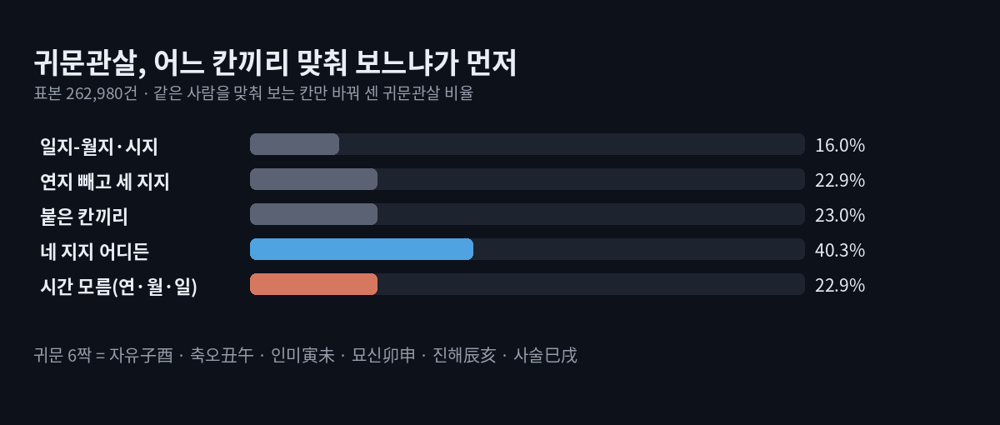
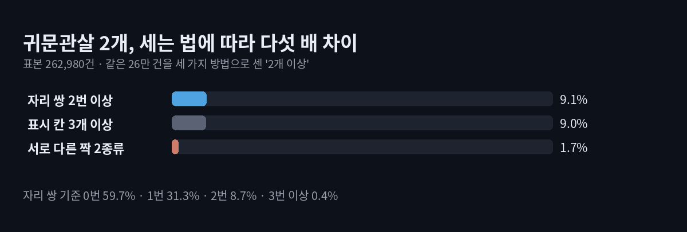
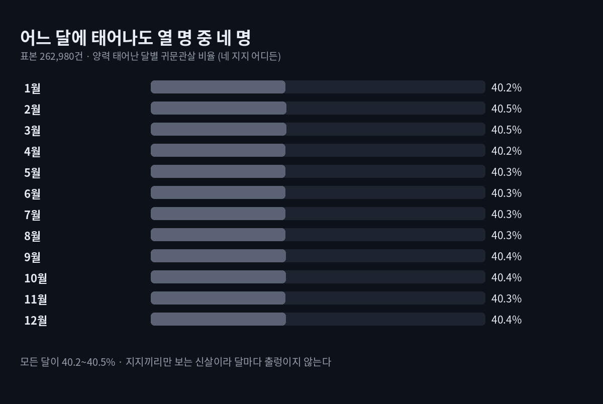

귀문관살 2개 있는 사주 9.1%, 서로 다른 두 짝은 1.7%
귀문관살 2개라는 결과를 받았다면, 같은 표시가 나오는 사람은 대략 열한 명에 한 명입니다. 1950~2009년의 모든 날짜와 시진을 우리 엔진으로 계산해 보니, 네 지지 사이에서 귀문 짝이 두 번 이상 맞는 사주는 9.1%였습니다. 다만 서로 다른 짝 두 종류를 함께 가진 사람은 1.7%뿐이라, '2개'가 무엇을 센 숫자인지에 따라 드문 정도가 다섯 배 넘게 달라집니다.
귀문관살(鬼門關煞)은 태어난 해·달·날·시의 아래 글자, 곧 지지(地支) 두 개가 정해진 짝을 이룰 때 붙이는 이름입니다. 짝은 자유(子酉)·축오(丑午)·인미(寅未)·묘신(卯申)·진해(辰亥)·사술(巳戌) 여섯입니다. 풀이 다섯 편을 읽어 보니 이 여섯 짝은 모두 같았지만, 어느 칸끼리 맞춰 보는지와 '몇 개'를 세는 법은 제각각이었고, 비율을 적은 곳은 없었습니다.
결론부터
- 네 지지 어디서든 짝이 하나라도 맞는 사람은 40.3%입니다.
- 일지를 월지·시지와만 맞춰 보면 16.0%, 나란히 붙은 칸끼리만 보면 23.0%입니다.
- 짝이 두 번 이상 맞는 사주는 9.1%, 서로 다른 짝이 두 종류인 사주는 1.7%입니다.
- 태어난 달이나 일지에 따른 차이는 거의 없습니다. 어느 쪽으로 나눠도 40.2~40.5% 사이였습니다.

귀문관살 2개, 무엇을 센 숫자일까?
만세력마다 '2개'의 뜻이 다릅니다. 짝이 맞은 자리 쌍의 수일 수도, 서로 다른 짝의 종류일 수도, 표시가 붙은 칸 수일 수도 있습니다. 세 가지를 같은 26만 건에서 따로 셌습니다.

짝이 맞은 자리 쌍으로 세면 0번 59.7%, 1번 31.3%, 2번 8.7%, 3번 이상 0.4%입니다. 두 번 이상이 대개 같은 짝의 반복이라는 점이 눈에 띕니다. 한 지지가 두 칸에 있으면 짝 하나가 두 번 맞기 때문입니다.
실제 날짜로 보면 차이가 분명합니다. 1995년 5월 1일 오전 8시생은 을해·경진·임자·갑진으로, 해(亥)와 진(辰)이 두 번 만나 진해 귀문 '2개'가 됩니다. 같은 날 오후 6시생은 시주가 기유로 바뀌면서 진해에 자유(子酉)가 더해져 서로 다른 두 짝이 됩니다. 시간 하나로 '2개'의 내용이 바뀝니다.
이미 귀문이 하나라도 있는 사람만 모으면 22.6%가 두 번 이상이었습니다. 생시를 모른 채 연·월·일 세 지지만 보면 두 번 이상은 2.1%로 줄어듭니다.
입력값은 브라우저 안에서만 계산되고 어디로도 전송되지 않습니다.
맞춰 보는 칸에 따라 다시 세면
| 기준 | 귀문관살이 있다고 보는 경우 | 비율 |
|---|---|---|
| 기준1 | 일지와 월지, 또는 일지와 시지 | 16.0% |
| 기준2 | 연지를 빼고 월·일·시 지지 사이 | 22.9% |
| 기준3 | 나란히 붙은 칸(연월·월일·일시) | 23.0% |
| 기준4 | 네 지지 어디든(여섯 쌍) | 40.3% |
지지 하나에는 귀문 짝이 될 글자가 꼭 하나뿐이라, 아무 두 칸이 짝일 확률은 1/12, 곧 8.3%입니다. 실제로 여섯 자리 쌍 모두 8.3%가 나왔고, 여섯 짝도 저마다 7.0%로 고르게 나왔습니다. 일지 중심 기준은 1−(11/12)² = 16.0%로 손셈과 엔진이 같았습니다.
- 계산 범위: 1950~2009년의 하루하루를 열두 시진으로 나눈 262,980건
- 다른 표본으로 한 번 더: 1890~1949년생 262,968건에서도 기준 넷과 2개 이상(9.1%)이 그대로였습니다. 네 지지를 서로 무관하게 놓고 12⁴가지를 전부 센 값과도 일치했습니다.
원진살과는 얼마나 겹칠까?
원진(怨嗔)도 지지 두 개의 짝인데, 여섯 중 축오·묘신·진해·사술 넷이 귀문과 같습니다. 그래서 네 지지 기준으로 귀문이 있는 사람의 79.2%는 원진도 함께 가집니다. 원진 단독 비율도 40.3%로 귀문과 똑같고, 둘 중 하나라도 있는 사람은 48.8%였습니다. 두 이름이 같이 뜬다면 같은 두 글자를 두 번 부른 경우가 많다고 보면 됩니다.

백호대살처럼 달마다 크게 출렁이지 않는 이유는 귀문이 천간 없이 지지끼리만 보는 신살이기 때문입니다. 연지·월지·일지·시지가 서로 거의 따로 움직여서, 어느 달에 태어나도 짝을 만날 기회가 비슷합니다.
한계
- 여기서 센 것은 지지 짝이 원국에 몇 번 맞느냐입니다. 성격이나 건강, 재능을 가늠하는 숫자가 아닙니다.
- 합·충으로 귀문이 풀린다는 해석, 신강·신약, 대운·세운에서 들어오는 짝은 넣지 않았습니다.
- 모든 날과 시진에 같은 수가 태어난다고 놓았고, 절기가 바뀌는 날의 월지는 근사식으로 잡았습니다. 밤 11시대는 자정에 날이 바뀌는 우리 계산기 방식을 따랐는데, 이 차이는 야자시 조자시 편에 따로 정리해 두었습니다.
내 귀문관살, 이렇게 읽어 보세요
귀문관살 2개가 나왔다면 먼저 어느 칸과 어느 칸이 맞았는지, 같은 짝이 반복된 것인지 다른 짝 둘인지 확인해 보세요. 시지가 끼어 있다면 생시에 따라 사라질 수도 있는 표시입니다. 비슷한 '2개' 질문은 백호대살 2개 편에서 기둥 단위로 셌습니다. 같은 개수라도 세는 단위부터 맞추면 결과가 덜 헷갈린다고 봅니다.
사주를 재미로 들여다보는 글입니다. 귀문관살 비율은 지지 짝이 맞는 횟수를 센 계산값이며, 마음 상태나 건강, 앞날의 사건을 판정하거나 약속하지 않습니다.